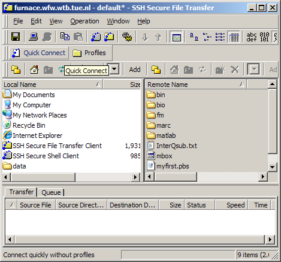
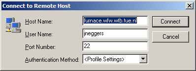
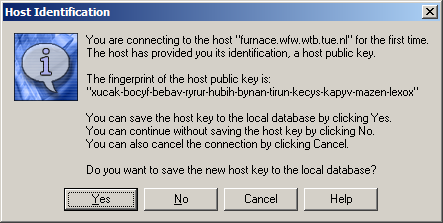
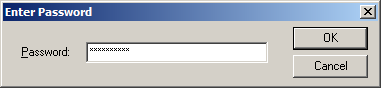
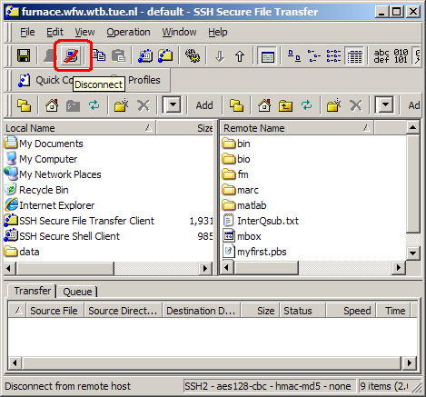
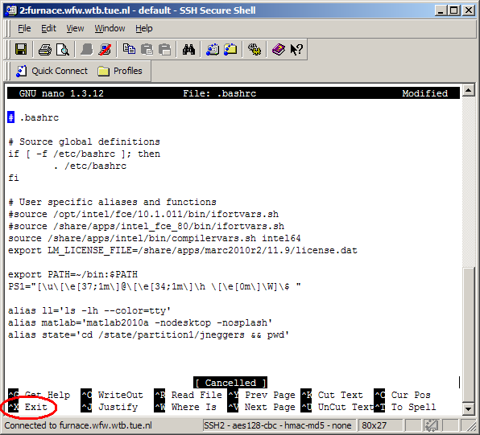
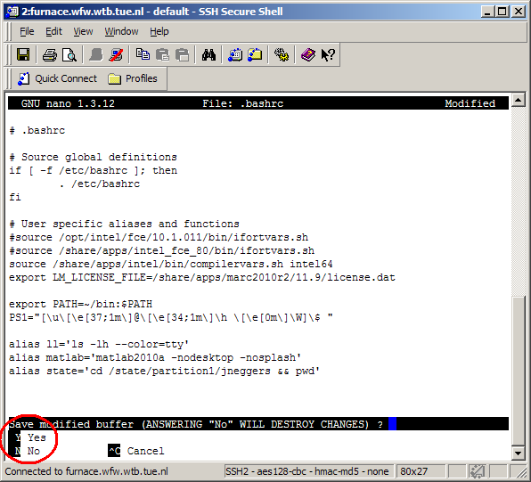

Outline
Practicalities
There are several clusters available in the MaTe group, and many more will come at some point after writing this document. Therefore, this manual uses the furnace cluster as an example. The furnace cluster consists of the following resources:
Note
“Processor” refers to the physical piece of chip, i.e, to the object you buy. However, most processors have more computation units referred to as “cores”.
The furnace cluster has the following host-name:
furnace.wfw.wtb.tue.nl
It, and all the other clusters, can be reached from within the TU/e network (including VPN). Within the MaTe network, the host-name may be abbreviated by removing .wfw.wtb.tue.nl. In the following examples we only use the abbreviated form. The clusters host a website (which can only be reached from within the MaTe network) where they present statistics about currently running jobs. For furnace:
http://furnace.wfw.wtb.tue.nl/ganglia
The basic layout of a cluster is shown in the image below. The cluster consists of a head-node and several compute-nodes. The head-node is the “computer” you log in to from your own PC. From the head-node, jobs are distributed to the compute-nodes by a scheduler: the queuing system. The scheduler sends the job to a compute-node when a free spot with the requested resources is available. Running a job thus corresponds to submitting a special (Bash-)script to the scheduler. You don’t know a-priori when, or on which compute-node, your job will be handled.

The clusters run a service called “ssh”, which is short for Secure SHell. This service can present a remote Command Line Interface (CLI) over a network. In Layman’s terms, it allows you to type commands from your own computer which are executed on the cluster. An ssh-client is therefore needed, which can be obtained for any operating system.
Additionally, before and after running a job, the relevant files have to be transferred to and from the cluster respectively. Below we discuss several interfaces for either Linux/Mac or Windows users. It is remarked that generally copying actions/commands run on the users’ computer, not on the cluster.
For each user a personal “home” folder is created on the head-node at /home/username. This folder sits on a 4.5 TB Raid-6 disk-cluster, which seems like a lot, but this space is shared by all users. The same “home” folder is mounted on each compute-node on the same location, i.e. /home/username over network. As a result, the files you have in your home folder on the head-node will automatically be available on each compute-node, although the read/write speed is limited by the network connection.
Note
Your personal disk usage can be checked by issuing du -sh in your home folder, the total disk usage can be checked with df -h (i.e. the line starting with /dev/sdb1). Further reference:
To connect to the cluster from Windows, first a ssh-client is required. Several options exist, for example:
To log-in to the cluster, open the software (either the SSH Secure Shell Client or the SSH Secure File Transfer Client) and hit the Quick Connect button.
In the pop-up menu the Host Name and the User Name should be set, then press Connect.
The first time, the software asks to confirm that this computer you are connecting to is the one you expect, confirm the question with Yes.
Finally enter your password
The SSH-Client comes with two window types the SSH Secure Shell Client or the SSH Secure File Transfer Client. The Shell Client is useful for running commands on the cluster, i.e. as a Command Line Interface. The Transfer Client is useful to copy files between your computer and the cluster. Moreover, these two windows can be quickly accessed from the two buttons in the toolbar:

Note the disconnect button in the toolbar.
Note
Be sure to use this before closing the program, otherwise an instance of ssh will keep running on the cluster for every time you exit without disconnecting.
Almost all Linux/Mac distributions have a ssh-client installed. To login to the furnace cluster, open a terminal window on your own computer, and execute:
[username@mypc ~]$ ssh myclusteraccount@furnace
If this is the first time, ssh will ask you to confirm the identity of the computer you are connecting to. Confirm the question, and enter your password to log-in on the furnace.
To avoid the need to provide the user’s password on each login, a key can be generated on the host computer and provided to the cluster. If still logged-in on the furnace, hit Ctrl-D or type exit to log-out and return to your own computer. Then follow these steps:
Generate a key on your own computer:
[username@mypc ~]$ ssh-keygen -t dsa
confirm each question with Return.
Copy the key to the cluster with:
[username@mypc ~]$ ssh-copy-id myclusteraccount@furnace
If done right, from now on logging in will be password-less.
There are several file transfer options, partially depending on the Linux/Mac distribution used:
Using a file browser (e.g. Nautilus for Gnome, or Dolphin for KDE). Open the browser and type sftp://myclusteraccount@furnace in the address bar (or location bar).
Using scp from the command line. This command is completely analogous to the cp command (see The BASH-shell). To copy files to the cluster (e.g. furnace) type in your local prompt:
[username@mypc ~]$ scp somepath myclusteraccount@furnace:somefurnacepath
where somepath should be replaced. To copy files from the cluster back to the users’ computer, the source and the destination should be reversed:
if not logged in via ssh on furnace:
[username@mypc ~]$ scp myclusteraccount@furnace:someclusterpath somepath
if logged in on furnace via ssh:
[myclusteraccount@furnace ~]$ scp someclusterpath mypcusername@mypc:somepath
Note that to copy folders -r should be added after scp.
The more advanced user may want to take a look at the rsync command, which can perform fast transfer/synchronization.
Here, some basic examples are given to edit files/scripts, often located on the cluster. There are three ways of doing this
Copy the file to your own computer (sometimes called local), and then edit it with your favorite text/script editor (e.g. with code highlighting), and finally copy the file back to the cluster. This option is recommended for large modifications to a script.
Edit the file directly on the cluster with a local editor which can directly open the file on the cluster, this can typically only be done from a Linux computer, and is considered outside the scope of this document.
Edit the file on the cluster with an editor which runs in the command line from a shell on the cluster. This option is recommended for small script modifications.
There are several command line based, text editors available on the clusters (and on most other Linux machines) named vi, emacs, and nano. The first two are advanced and powerful, but are extremely beginner unfriendly. Luckily, nano behaves a bit more intuitive, you can start editing a file with nano by executing:
[username@furnace ~]$ nano myfile.txt
When done, press Ctrl-X to exit, upon which the program ask to save the changes (Y) or not (N)
  Cluster manual
Cluster manual